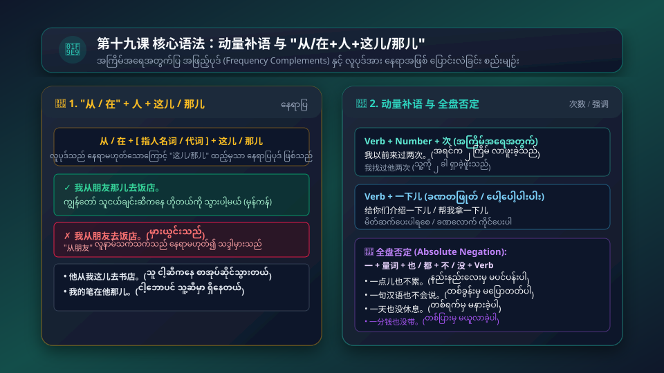

ပေကျင်းဟိုတယ်တွင် ညစာဖိတ်ကျွေးခြင်း • ယဉ်ကျေးပျူငှာစွာ တုံ့ပြန်ပြောဆိုနည်းများ (别客气 / 真不好意思) • နေရာပြ "从/在 + 人 + 这儿/那儿" စည်းမျဉ်း • အကြိမ်အရေအတွက်ပြ အဖြည့်ပုဒ် (动量补语: 来过两次 / 介绍一下儿) • လုံးဝငြင်းပယ်ခြင်း (一点儿也不累)
အသံဖိုင်ခလုတ်ကို နှိပ်၍ သဘာဝကျကျ အသံထွက်ကို လေ့လာပါ
别客气。
Bié kèqi.
ပျယ် ခော့ချိ။
အားမနာပါနဲ့ / ရပါတယ်။ (Not at all / You're welcome)
一点儿也不累。
Yìdiǎnr yě bù lèi.
ယိတျာရ် ရယ် ပု လေ။
နည်းနည်းလေးမှ မပင်ပန်းပါဘူး။ (လုံးဝငြင်းပယ်ခြင်း)
您第一次来中国吗？
Nín dì-yī cì lái Zhōngguó ma?
နင်း တိယီ ချစ် လိုက် ကျုန်းကော် မ?
ဒါ လူကြီးမင်း တရုတ်ပြည်ကို ပထမဆုံးအကြိမ် လာတာလားခင်ဗျာ/ရှင့်။
我以前来过两次。
Wǒ yǐqián lái guo liǎng cì.
ဝေါ် ယီချန် လိုက် ကော် လျှန် ချစ်။
ကျွန်တော် အရင်က နှစ်ခါ လာဖူးပါတယ်။ (အကြိမ်အရေအတွက်ပြ)
这是我们经理给您的信。
Zhè shì wǒmen jīnglǐ gěi nín de xìn.
ကျော့ ဆစ် ဝေါ်မိန် ကျင်းလီ ကေ နင်း တ ဆင်း။
ဒါ ကျွန်တော်တို့ မန်နေဂျာက လူကြီးမင်းထံ ပေးလိုက်တဲ့ စာပါခင်ဗျာ။
他问您好。
Tā wèn nín hǎo.
ထာ ဝိန် နင်း ဟောင်။
သူက လူကြီးမင်းကို နှုတ်ဆက်မေတ္တာပို့လိုက်ပါတယ်ခင်ဗျာ။
我们在北京饭店请您吃晚饭。
Wǒmen zài Běijīng Fàndiàn qǐng nín chī wǎnfàn.
ဝေါ်မိန် စိုက် ပေကျင်း ဖန့်တျန် ချင်း နင်း ချစ် ဝမ်ဖန့်။
ကျွန်တော်တို့ ပေကျင်းဟိုတယ်မှာ လူကြီးမင်းကို ညစာ ဖိတ်ကျွေးပါရစေ။
我从朋友那儿去饭店。
Wǒ cóng péngyou nàr qù fàndiàn.
ဝေါ် ဆုန်း ဖုန်ယို့ နာရ် ချွိ ဖန့်တျန်။
ကျွန်တော် သူငယ်ချင်းဆီကနေ ဟိုတယ်ကို သွားပါ့မယ်။ (လူပုဒ် + 那儿)

ဇာတ်ကောင်တစ်ဦးချင်းစီ၏ အသံကို သီးသန့်နားထောင်နိုင်ပါသည်
您好，李先生！我是王大年，公司的翻译。
Nín hǎo, Lǐ xiānsheng! Wǒ shì Wáng Dànián, gōngsī de fānyì.
မင်္ဂလာပါ မစ္စတာလီ! ကျွန်တော်က ဝမ်သန့်နျန်ပါ၊ ကုမ္ပဏီရဲ့ စကားပြန်ပါ။
谢谢您来接我。
Xièxie nín lái jiē wǒ.
ကျွန်တော့်ကို လာကြိုပေးတဲ့အတွက် ကျေးဇူးတင်ပါတယ်။
别客气。路上辛苦了。累了吧？
Bié kèqi. Lùshang xīnkǔ le. Lèi le ba?
အားမနာပါနဲ့ခင်ဗျာ။ လမ်းမှာ ပင်ပန်းခဲ့ပြီနော်။ ညောင်းညာပင်ပန်းနေပြီလား။
一点儿也不累，很顺利。
Yìdiǎnr yě bú lèi, hěn shùnlì.
နည်းနည်းလေးမှ မပင်ပန်းပါဘူး၊ အရာရာ အဆင်ပြေချောမောခဲ့ပါတယ်။
汽车在外边，我们送您去饭店。
Qìchē zài wàibian, wǒmen sòng nín qù fàndiàn.
ကားက အပြင်ဘက်မှာ ရှိပါတယ်၊ ကျွန်တော်တို့ လူကြီးမင်းကို ဟိုတယ်ကို လိုက်ပို့ပေးပါ့မယ်။
我还有两个朋友。
Wǒ hái yǒu liǎng ge péngyou.
ကျွန်တော့်မှာ သူငယ်ချင်းနှစ်ယောက်လည်း ကျန်ပါသေးတယ်။
那一起走吧。
Nà yìqǐ zǒu ba.
ဒါဆိုရင် အတူတူ သွားကြတာပေါ့ခင်ဗျာ။
谢谢！
Xièxie!
ကျေးဇူးတင်ပါတယ်!
欢迎您，李先生！
Huānyíng nín, Lǐ xiānsheng!
မစ္စတာလီ၊ ကြိုဆိုပါသည်ခင်ဗျာ!
谢谢！
Xièxie!
ကျေးဇူးတင်ပါတယ်ခင်ဗျာ!
您第一次来中国吗？
Nín dì-yī cì lái Zhōngguó ma?
လူကြီးမင်း တရုတ်ပြည်ကို ပထမဆုံးအကြိမ် လာရောက်တာလားခင်ဗျာ။
不，我以前来过两次。这是我们经理给您的信。
Bù, wǒ yǐqián lái guo liǎng cì. Zhè shì wǒmen jīnglǐ gěi nín de xìn.
မဟုတ်ပါဘူး၊ ကျွန်တော် အရင်က နှစ်ကြိမ် လာဖူးပါတယ်။ ဒါက ကျွန်တော်တို့ မန်နေဂျာက လူကြီးမင်းထံ ပေးလိုက်တဲ့ စာပါခင်ဗျာ။
麻烦您了。
Máfàn nín le.
လူကြီးမင်းကို အလုပ်ရှုပ်စေမိပါပြီ။
他问您好。
Tā wèn nín hǎo.
သူက လူကြီးမင်းကို နှုတ်ဆက်မေတ္တာပို့လိုက်ပါတယ်ခင်ဗျာ။
谢谢。今天我们在北京饭店请您吃晚饭。
Xièxie. Jīntiān wǒmen zài Běijīng Fàndiàn qǐng nín chī wǎnfàn.
ကျေးဇူးတင်ပါတယ်။ ဒီနေ့ ပေကျင်းဟိုတယ်မှာ ကျွန်တော်တို့ လူကြီးမင်းကို ညစာ ဖိတ်ကျွေးပါရစေ။
您太客气了，真不好意思。
Nín tài kèqi le, zhēn bù hǎoyìsi.
လူကြီးမင်း အရမ်းအားနာစရာ ကောင်းလိုက်တာ၊ တကယ် အားနာမိပါတယ်ခင်ဗျာ။
您有时间吗？
Nín yǒu shíjiān ma?
လူကြီးမင်း အချိန်ရပါ့မလားခင်ဗျာ။
下午我去朋友那儿，晚上没事。
Xiàwǔ wǒ qù péngyou nàr, wǎnshang méi shì.
နေ့လယ်ပိုင်း ကျွန်တော် သူငယ်ချင်းဆီ သွားမှာပါ၊ ညနေပိုင်းတော့ ကိစ္စမရှိပါဘူး (အားပါတယ်)။
我们去接您。
Wǒmen qù jiē nín.
ကျွန်တော်တို့ လူကြီးမင်းဆီ လာကြိုပါ့မယ်။
不用了，我可以打车从朋友那儿去。
Búyòng le, wǒ kěyǐ dǎ chē cóng péngyou nàr qù.
မလိုပါဘူးခင်ဗျာ၊ ကျွန်တော် သူငယ်ချင်းဆီကနေ တက္ကစီငှားပြီး သွားလိုက်ပါ့မယ်။
စကားလုံးကတ်တစ်ခုချင်းစီတွင် အသံထွက်နှင့် အဓိပ္ပာယ်ကို လေ့လာပါ
မ...ပါနှင့် (don't)
အားနာသော / ယဉ်ကျေးသော
အကြိမ်ပြ ရှေ့ဆက် (ပထမ၊ ဒုတိယ)
အကြိမ် / ခါ (occurrence)
မန်နေဂျာ (manager)
လူကြီးမင်း / သခင် / ဦး (Mr.)
စကားပြန် / ဘာသာပြန်ဆိုသည်
ချောမောသော / အဆင်ပြေသော
အပြင်ဘက် (outside)
လိုက်ပို့သည် / ပို့ဆောင်သည်
အရင်က / ယခင်က (before)
အလုပ်ရှုပ်စေသည် / ဒုက္ခပေးသည်
အားနာစရာကောင်းသည် / ရှက်သည်
မလိုပါ / မလိုအပ်ပါ (no need)
တက္ကစီ ငှားစီးသည်
ပူသော (hot)
မိနစ် (minute)
စာပို့သည် / ပါဆယ်ပို့သည်
စကားတစ်ခွန်း / ဝါကျတစ်ကြောင်း
ပေကျင်းဟိုတယ် (Beijing Hotel)
ဝမ်သန့်နျန် (ကုမ္ပဏီစကားပြန်)
တရုတ်သဒ္ဒါစည်းမျဉ်းများကို မြန်မာသဒ္ဒါနှင့် နှိုင်းယှဉ်လေ့လာပါ
တရုတ်ဘာသာတွင် နေရာပြဝိဘတ်များဖြစ်သော 从 (မှ) နှင့် 在 (တွင်) ၏ နောက်ကွယ်ရှိ စကားလုံးသည် လူကိုရည်ညွှန်းသော နာမ် သို့မဟုတ် နာမ်စား ဖြစ်နေပါက၊ ၎င်း၏နောက်တွင် 这儿 သို့မဟုတ် 那儿 ကို မဖြစ်မနေ ထည့်သွင်းပေးရမည်။ (လူသည် နေရာမဟုတ်သောကြောင့် ဖြစ်ပါသည်)။
他从我这儿去书店。
Tā cóng wǒ zhèr qù shūdiàn.
သူ ငါ့ဆီကနေ စာအုပ်ဆိုင်ကို သွားတယ်။
我从张大夫那儿来。
Wǒ cóng Zhāng dàifu nàr lái.
ကျွန်တော် ဒေါက်တာကျန်းတို့ဆီကနေ လာတာပါ။
我妹妹在玛丽那儿玩儿。
Wǒ meimei zài Mǎlì nàr wánr.
ငါ့ညီမ မာရီတို့ဆီမှာ သွားဆော့နေတယ်။
我的笔在他那儿。
Wǒ de bǐ zài tā nàr.
ငါ့ဘောပင် သူ့ဆီမှာ ရှိနေတယ်။
我从朋友那儿去饭店 (✓ မှန်ကန်သည်) vs 我从朋友去饭店 (✗ မှားယွင်းပါသည်)။
လုပ်ဆောင်မှုတစ်ခု၏ အကြိမ်အရေအတွက်ကို ဖော်ပြလိုသောအခါ ဂဏန်း + 次 (အကြိမ်) သို့မဟုတ် 一下儿 (ခဏမျှ/ပေါ့ပေါ့ပါးပါး) ကို ကြိယာနောက်တွင် ထည့်ရသည်။
他来过一次。
Tā lái guo yí cì.
သူ တစ်ခါ လာဖူးခဲ့တယ်။
我找过他两次，他都不在。
Wǒ zhǎo guo tā liǎng cì, tā dōu bú zài.
ငါ သူ့ကို နှစ်ခါ ရှာခဲ့ဖူးတယ်၊ သူ မရှိဘူး။
给你们介绍一下儿。
Gěi nǐmen jièshào yíxiàr.
ခင်ဗျားတို့ကို မိတ်ဆက်ပေးပါရစေ။
你帮我拿一下儿。
Nǐ bāng wǒ ná yíxiàr.
ငါ့ကို ခဏလောက် ကူကိုင်ပေးပါဦး။
ကြိယာ၊ ကြိယာစု သို့မဟုတ် ကတ္တား-ကြိယာစုများကို နာမ်အား အထူးပြုရန် သုံးသောအခါ နောက်တွင် 的 ကို မဖြစ်မနေ ထည့်ရသည်။
来的人很多。
Lái de rén hěn duō.
လာတဲ့ လူတွေ အရမ်းများတယ်။
学习汉语的学生不少。
Xuéxí Hànyǔ de xuésheng bù shǎo.
တရုတ်စာ သင်ယူတဲ့ ကျောင်းသားတွေ မနည်းပါဘူး။
这次我来北京很顺利。
Zhè cì wǒ lái Běijīng hěn shùnlì.
ဒီတစ်ခေါက် ကျွန်တော် ပေကျင်းလာရတာ အရာရာ ချောမောအဆင်ပြေခဲ့ပါတယ်။
我寄给你的信收到了吗？
Wǒ jì gěi nǐ de xìn shōudào le ma?
ငါ မင်းဆီ ပို့လိုက်တဲ့ စာကို ရောက်ပြီလားခင်ဗျာ။
我来中国的时候一句汉语也不会说。
Wǒ lái Zhōngguó de shíhou yí jù Hànyǔ yě bù huì shuō.
ကျွန်တော် တရုတ်ပြည် စရောက်တုန်းက တရုတ်စကား တစ်ခွန်းမှ မပြောတတ်ခဲ့ပါဘူး။
上星期五我去大同了。我是坐火车去的，今天早上回来的。我第一次去大同。我很喜欢这个地方。从北京到大同很近。坐火车去大概要七个小时。现在去，不冷也不热。下星期你也去吧。
(မြန်မာပြန်: ပြီးခဲ့တဲ့ သောကြာနေ့က ကျွန်တော် တာ့ထုန်းကို သွားခဲ့ပါတယ်။ ရထားစီးပြီး သွားခဲ့တာပါ၊ ဒီမနက်မှ ပြန်ရောက်တာပါ။ တာ့ထုန်းကို ကျွန်တော် ပထမဆုံးအကြိမ် သွားဖူးတာဖြစ်ပြီး အရမ်းသဘောကျပါတယ်။ ပေကျင်းကနေ တာ့ထုန်းက နီးပြီး ရထားစီးရင် ၇ နာရီလောက်ပဲ ကြာပါတယ်။ အခုသွားရင် မအေးသလို မပူပါဘူး။ လာမယ့်အပတ် မင်းလည်း သွားလည်ပါဦးလား။)
အဖြေမှန်ကို ရွေးချယ်ပြီး ချက်ချင်း အဖြေမှန်စစ်ဆေးနိုင်ပါသည်
၁။ "ကျွန်တော် သူငယ်ချင်းဆီကနေ ဟိုတယ်ကို သွားပါ့မယ်" ဟူသော ဝါကျတွင် မည်သည့်သဒ္ဒါပုံစံ မှန်ကန်သနည်း။
၂။ "ကျေးဇူးတင်ပါသည် (谢谢)" ဟု ပြောလာပါက အလွန်ယဉ်ကျေးစွာ ပြန်လည်ပြောကြားသည့်စကားမှာ အဘယ်နည်း။
၃။ "我以前来过两次" ဝါကျရှိ "两次" (နှစ်ကြိမ်) သည် မည်သည့် သဒ္ဒါအမျိုးအစား ဖြစ်သနည်း။
၄။ "တရုတ်စကား တစ်ခွန်းမှ မပြောတတ်ခဲ့ပါ" ဟူသော လုံးဝဥဿုံ ငြင်းပယ်ဝါကျမှာ အဘယ်နည်း။